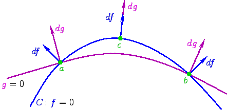
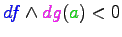
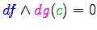
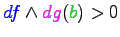
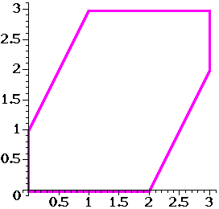
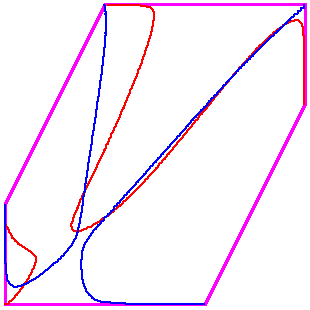
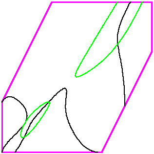
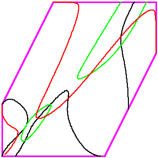
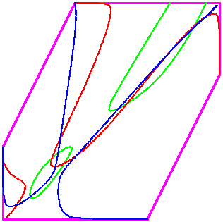

Khovanskii-Rolle continuation for real solutions
Dan Bates and
Frank Sottile
The purpose
Numerical homotopy methods [SW] can compute all nondegeneration solutions of
a polynomial polynomial systems.
To find only the nondegenerate real solutions of a polynomial system with
homotopy, one must first compute all nondegenerate complex solutions.
There are examples of
systems with thousands of complex solutions but only a few real solutions, so
this procedure can be inefficient.
The goal of this project is to develop a method to find only real solutions of
a polynomial system via curve-following (related to homotopy methods, but
without the homotopies). The method is rooted in fewnomial theory
(particularly the Khovanskii-Rolle theorem and Gale Duality) and constitutes
the first known continuation method that produces only the real solutions
without also producing the complex solutions.
This page describes the method for the case of two equations in two variables -
the simplest nontrivial case. Rather than giving all details of the general
method (see [BaS]), we focus on an illustrating example. Extensions
to larger systems are under development.
The software/scripts may be obtained from links at the end of this page.
Overview of the method
Basic notions
Given a polynomial system h(x) with n polynomials whose support
consists of n+L+1 monomials in n variables, we may use Gale
duality [BiS] to change to a system g(y) of L polynomials in
L variables.
For this to be practical, L should be small (this is a
fewnomial system).
One key observation is that there is a (algorithmic) scheme-theoretic
isomorphism between the real solutions of the original system f(x) and
the real solutions of the Gale dual system g(y). Thus, given the
solutions to one, it is not hard to find the solutions of the other.
The other key to this method is to the Khovanskii-Rolle theorem [K].
Suppose that we have smooth functions f1,...,fL-1,g
on a domain D of RL
with finitely many common zeroes in D, and such that the common zeroes of all but
the last functions, f1,...,fL-1, is a
smooth curve C in D.
Let J be the Jacobian determinant of the functions
f1,...,fL-1,g.
The Khovanskii-Rolle theorem then says, roughly, that between any two zeroes of
g along an arc of C there is at least one zero of J.
The following picture illustrates the Khovanskii-Rolle Theorem when L=2.

,
,
and .
The method
With those tools (Gale duality and the Khovanskii-Rolle theorem) in hand, we now give
pseudocode for the method in the case L=2:
Input: The Gale dual system g1(y1,
y2), g1(y1, y2).
Output: All real solutions in the polyhedron P in
R2 (with variables y_1, y_2)
corresponding to the positive orthant of Rn (with variables x).
Method:
- Form J2 (the Jacobian determinant of g1
and g2) and J1 (the Jacobian determinant of
g1 and J2).
After multiplying by linear forms defining the edges of P, these have
degrees n and 2n, respectively.
- Find all real solutions of the polynomial system
J1=J2=0.
(At most 2n2.)
- Starting from those points AND points on the boundary of P at which
J1=0 (at most n times the number of edges of
P), track along the curve
J1=0 in search of points at which g2=0.
- Starting from the solutions found in the previous step AND point on the
boundary of P at which g2=0 (necessarily vertices), track
along the curve g2=0 in search of points at which
g1=0. Return these points.
A few remarks about the pseudocode
- Output: One can in fact find solutions away from a certain hyperplane
arrangement (not just within a certain polyhedron); the polyhedron
corresponding to the positive orthant in the original variables is just the
basic case.
- Step 2: This can be done numerically or symbolically. (We use numerical homotopy.)
The system to be solved here is much smaller than the initial system (if the original
system is indeed a fewnomial system).
- Steps 3 and 4: The boundary starting points are easily computed. The
curve-following is carried out by standard predictor-corrector schemes.
We track the curve in both directions from an interior starting point and into P for
starting points on its boundary.
The edge inequalities tell us when a curve has left P.
- Steps 3 and 4: Points on these curves where the
target function (e.g., g2 in Step 3) vanishes are found by
monitoring the sign of the target function and repeated bisection.
This procedure could be fooled with two very near solutions, but that may be
detected by monitoring the sign of the Jacobian as well.
- Step 4: The curves are singular at the vertices, but may be
approximated by monomial curves near the vertices (as explained in [BS]).
This allows the tracing of curves near the vertices using a hybrid of the
standard and monomial tracing procedures.
A basic example
We describe our computation to find all positive real solutions of the system of equations
|
t-1u691v5w5
|
= 3500(3-t) |
|
t-1u463v5w5
| = 3500(7-2t-v) |
|
t1u492
| = v+2t - 4 |
|
w
| = 9-2t-2v. |
Under the substitution x=t
and y=t1u492,
this is Gale-dual to the system
350012x8y4
(3-y)45 -
(3-x)33(4-2x+y)60
(2x-y+1)60
= 0
350012x27(3-x)8
(3-y)4 -
y15(4-2x+y)60
(2x-y+1)60
= 0
in the interior of the hexagon below.
|

|
x > 0
|
|
y > 0
|
|
(3-x) > 0
|
|
(3-y) > 0
|
|
(2x-y+1) > 0
|
|
(4-2x+y) > 0
|
We find all positive real solutions to the original system of equations by solveing the
Gale-dual system in the hexagon.
The six edges of the hexagon define an arrangement A of six lines in the plane, and
the system makes sense in the complement MA of this arrangement,
as a subset of C2.
The system has 7663 solutions in MA, but only six in
the interior of the hexagon, corresponding to positive real solutions of the polynomial system
for which the polynomials above are the Gale dual.
Here is a picture of the two curves defined be each polynomial in the system and
a list of these six solutions.
|

|
(2.79663357, 2.79663357)
|
|
(2.26761325, 2.26761325)
|
|
(1.02038373, 0.88143449)
|
|
(0.79676549, 1.11264683)
|
|
(0.73238675, 0.73238675)
|
|
(0.20336643, 0.20336643)
|
To find these six solutions, we first solve the system of Jacobian determinants
described above, namely:
2736-15476x+2564y +32874x2-21075xy+6969y2
-10060x3-7576x2y+8041xy2-869y3 + 7680x3y-7680x2y2+1920xy3 = 0,
8357040x-2492208y
-25754040x2+4129596xy-10847844y2
-37659600x3+164344612x2y-65490898xy2+17210718y3 +75054960x4
-249192492x3y+55060800x2y2+16767555xy3-2952855y4 -36280440x5
+143877620x4y+35420786x3y2-80032121x2y3+19035805xy4-1128978y5 +5432400x6
-33799848x5y-62600532x4y2+71422518x3y3
-13347072x2y4-1836633xy5+211167y6
+2358480x6y+21170832x5y2-13447848x4y3-8858976x3y4+7622421x2y5-1312365xy6
-1597440x6y2-1228800x5y3+4239360x4y4-2519040x3y5+453120x2y6 = 0.
Here is a picture of the curves corresponding to those equations.

Standard numerical homotopy software can find the points of intersection of these two curves as
well as the points where the green curve meets the boundary
of P. The computation of these points involves the tracking of 56 homotopy paths.
There are 5 points in the interior and 2 points on the boundary.
From the Khovanskii-Rolle theorem, we are guaranteed that any solutions of the
red curve on the green curve
must fall between points on the green curve
described in the previous paragraph. Furthermore, any two intersections of the
red and green curves will have
one of these starting points between them.
We find these points where the red curve meets the
green curve by curve-tracking along the
green curve.

This yields 4 points on the interior of P.
The red curve vanishes at four vertices of P as well.
Starting at those points and the points found in the previous
step, we can now track along the red curve to find points
where it intersects the blue curve.

Ultimately, we find all six intersections of the red and
blue curves in the interior of P after tracing
just 30 curves (6 of which are immediately terminated due to being outside
P) and following 56 homotopy paths. This is in comparison to a standard
homotopy method which would involve following 15326 paths leading to 7663 complex
solutions.
Planned extensions
We intend to generalize this method to arbitary L (we have restricted to the
case L=2 thusfar, for simplicity).
Scripts for running this problem
The procedure described above has been implemented by the authors in Maple as a set of several
scripts. These scripts use Bertini as a blackbox for finding all complex roots of a
polynomials system. PHC or HOM4PS-2.0 could be substituted for Bertini, though that has not
yet been implemented.
Also, please note that this code is still under development and is neither fully general nor
completely tested (though we have tested several polynomial systems with it).
KhRo, a set of Maple scripts (tar.gz file)
You need to place a copy of (or link to) Bertini (the one appropriate to your
computer) in the directory "bertini_files" that you will find when you untar
KhRo. You can find Bertini at the following website:
Bertini (free, but not open source)
Further reading
[BaS]
Daniel J. Bates and F. Sottile,
Khovanskii-Rolle continuation for real
solutions,
Foundations of Computational
Mathematics, Volume 11, Number 5 (2011), 563-587. DOI: 10.1007/s10208-011-9097-1. 25 pages.
[BBS]
Daniel J. Bates, Frédéric Bihan, and F. Sottile,
Bounds on the number of real solutions to
polynomial equations, IMRN, 2007, 2007:rnm114-7.
[BiS]
Frédéric Bihan and F. Sottile,
Gale duality for complete intersection,
Annales de l'Institut Fourier, Tome 58 (2008) fasicule 3, pp. 877--891.
[K]
Askold Khovanskii (translated by Smilka Zdavkovska),
Fewnomials,
AMS, 1991.
[SW]
Andrew Sommese and Charles W. Wampler,
The numerical solution of systems of polynomials,
World Scientific, 2005.
Work of Sottile supported by the National Science Foundation
under CAREER Grant DMS-0538734 and grants DMS-0701050 and DMS-0915211.
Work of Bates supported by the National Science Foundation
under grant DMS-0914674.
This work was also supported in part by the Institute for Mathematics and its
Applications with funds provided by the National Science Foundation.
Any opinions, findings and conclusions or recomendations expressed in
this material are those of the authors and do not necessarily reflect the views of
the National Science Foundation).
Modified since: 4 August 2009 by Dan Bates and/or Frank Sottile